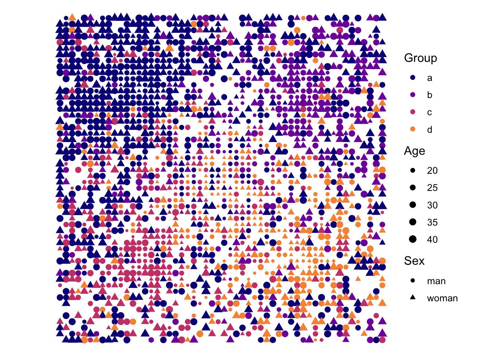
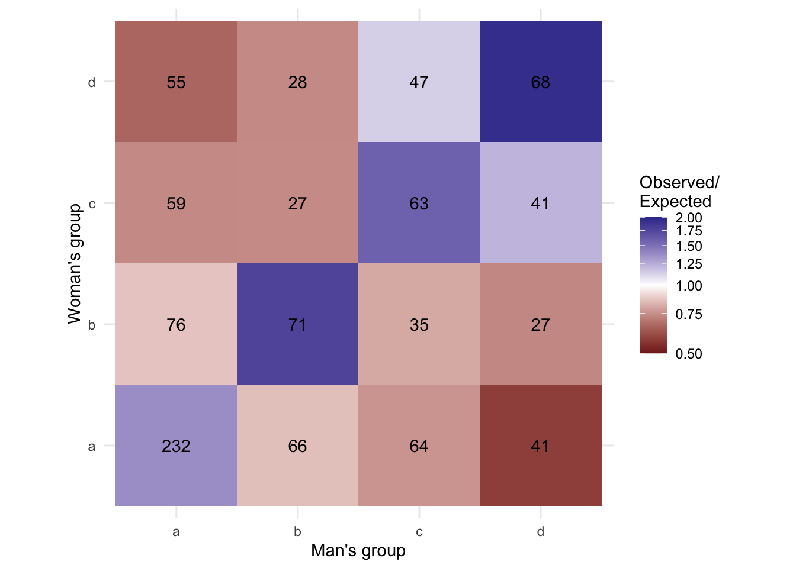

source("simulate_marriage_market.R")
marriage_market <- simulate_marriage_market(
seed = 543,
n = 2000,
groups = tibble(
group = c("a", "b", "c", "d"),
share = c(40, 20, 20, 20),
age_mean = c(34, 30, 27, 25),
age_min = 18,
age_max = 45,
age_concentration = 2
),
location_relax = 1.2,
location_poles = tibble(
pole = c("a", "b", "c", "d", "youth"),
x_pole = c(0.25, 0.75, 0.25, 0.75, 0.5),
y_pole = c(0.75, 0.75, 0.25, 0.25, 0.5)
),
location_params = list(group = -1, youth = -1, noise = 2),
partner_params = list(
same_group = 0.2,
rank_group = 0,
age_gap = -0.3,
distance = -2,
noise = 2
)
)What conditional logit models do that log-linear models struggle to do
conditional logit
assortative mating
I show how a conditional logit model can be used to model matching on person-to-person dyadic covariates, and the advantage of clogit compared to the log-linear analysis of contingency tables. The third in a series about using conditional logit models for modeling assortative mating and mobility
Introduction
This is the third post in a series about using conditional logistic regression for modeling assortative mating. In my first post, I simulated a fictive marriage market containing actors spread across three groups, with the groups spatially segregated and differing in their age distributions. Actors were presumed to form unions with each other based on a combination of group homophily, age similarity, and spatial proximity. In my second post, I showed the equivalence between log-linear models and conditional logistic regression models when it came to modeling patterns of assortativity between groups. I showed this equivalence both mathematically and when applied to the simulated union data, using saturated models and models of independence as test cases.
In this post, my aim is to demonstrate what conditional logistic regression can do quite naturally and elegantly that log-linear modeling can do only crudely. Specifically, because conditional logistic regression is formulated at the level of person-to-person dyads, rather than cells in a contingency table, conditional logistic regression readily accommodates dyad-specific covariates. This also means that, given the right data, one can estimate models that account for micro-level heterogeneity in the behaviors and covariates guiding union formation. This permits a clever analyst to tease apart mechanistic explanations of patterns of assortative mating and investigate covariates that might explain or moderate endogamy and/or exogamy. I think this micro-level orientation is a huge advantage and it militates in favor of including conditional logistic regression as a fixture in the toolkit for assortative mating analysis. I hope by the end of this post, you’ll be mostly convinced, but also see a path forward for using these models in your own research.
Simulating data: strong homogamy with only weak homophily
Some of my research has explored how residential segregation intervenes in processes of union formation. It is possible to formulate log-linear models that address this spatial heterogeneity. However, log-linear analysis often begins by aggregating data into contingency tables, which can entail substantial information loss for spatial and other continuously distributed covariates. By contrast, conditional logistic regression has a micro-level, dyadic foundation that makes it well suited to handling spatial information. Data permitting, one can measure fine-grained residential distances—either as the crow flies or as travel times along transportation networks—between potential partners and include these dyad-specific covariates directly in the model. And what goes for distance also goes for other continuously distributed covariates, including age and income.
I bring these issues into focus using an admittedly specially engineered example. In this example, I’ll specify a marriage process that has only weak dependence on group membership. It will depend more strongly on age similarity and spatial proximity. At the same time, the groups will be spatially segregated and will differ in their age distributions. Under these circumstances, the unions should be, in a descriptive sense, strongly homogamous. But at the micro-level, a reasonably good empirical model should show only a weak effect of group membership on union formation.
I use the same marriage market simulation functions I developed and used in the previous two posts. The call is below. In this fictive marriage market, there are 1,000 men and 1,000 women divided into four groups denoted simply by letters. These could denote any kind of categorical distinction one wishes to impose upon them. Here, I specify approximately 40% in the “a” group, 20% in “b”, 20% in “c”, and 20% in “d”, with small, random deviations in relative group shares among men and women. The groups differ in their mean ages, but the ages are constrained to vary between 18 and 45. The men and women are distributed in a two-dimensional space using a semi-random location assignment algorithm, with members of each group tending to locate near group-specific poles that are scattered around the city, and with those at younger ages being more likely to reside near the center of the map. Unions are made using a Gale-Shapley algorithm, where men and women have the same objective/utility functions (i.e., preferences), and random noise is added to utility.
The resulting distribution of individuals is shown below. As specified in the generative model, the groups are clustered in different parts of the city, with the city center attracting younger individuals. This leads younger groups, particularly the “d” group, to be disproportionately represented in the center of the city.

I construct a group-by-group contingency table from the resulting marriage data below. Along the way, I generate variables that will be helpful for later log-linear modeling, and I calculate the ratio of observed counts to expected counts, the latter based on a model of independence.
loglin_data <- marriage_market$matches |>
left_join(
marriage_market$singles |>
filter(sex == "man") |>
select(id_man = id, group_man = group)
) |>
left_join(
marriage_market$singles |>
filter(sex == "woman") |>
select(id_woman = id, group_woman = group)
) |>
count(group_woman, group_man) |>
mutate(men_in_group = sum(n), .by = group_man) |>
mutate(women_in_group = sum(n), .by = group_woman) |>
mutate(
expected = men_in_group * women_in_group / sum(n),
ratio = n / expected,
homog = 1L * (group_woman == group_man),
homog_spec = factor(if_else(homog == 1L, group_man, " "))
)The contingency table is visualized below. Reflecting a weak homogamy effect, age assortativity, and the spatial patterning of the groups, the unions are characterized by relatively strong homogamy, which can be seen by the massing of high counts on the diagonal relative to a model of independence.

Log-linear models of group assortativity
We can estimate a saturated log-linear model of assortative mating by group using these data using glm as follows:
Call:
glm(formula = n ~ group_woman * group_man, family = "poisson",
data = loglin_data)
Coefficients:
Estimate Std. Error z value Pr(>|z|)
(Intercept) 5.44674 0.06565 82.962 < 2e-16 ***
group_womanb -1.11600 0.13217 -8.444 < 2e-16 ***
group_womanc -1.36920 0.14581 -9.391 < 2e-16 ***
group_womand -1.43940 0.14997 -9.598 < 2e-16 ***
group_manb -1.25708 0.13951 -9.011 < 2e-16 ***
group_manc -1.28785 0.14119 -9.121 < 2e-16 ***
group_mand -1.73317 0.16941 -10.230 < 2e-16 ***
group_womanb:group_manb 1.18903 0.21611 5.502 3.76e-08 ***
group_womanc:group_manb 0.47538 0.27101 1.754 0.0794 .
group_womand:group_manb 0.58195 0.27085 2.149 0.0317 *
group_womanb:group_manc 0.51247 0.24832 2.064 0.0390 *
group_womanc:group_manc 1.35345 0.22969 5.893 3.80e-09 ***
group_womand:group_manc 1.13067 0.24371 4.639 3.49e-06 ***
group_womanb:group_mand 0.69827 0.28088 2.486 0.0129 *
group_womanc:group_mand 1.36920 0.26465 5.174 2.30e-07 ***
group_womand:group_mand 1.94534 0.24817 7.839 4.55e-15 ***
---
Signif. codes: 0 '***' 0.001 '**' 0.01 '*' 0.05 '.' 0.1 ' ' 1
(Dispersion parameter for poisson family taken to be 1)
Null deviance: 3.8611e+02 on 15 degrees of freedom
Residual deviance: 1.6875e-14 on 0 degrees of freedom
AIC: 125.05
Number of Fisher Scoring iterations: 3The significant interaction coefficients of the log-linear model are consistent with group homogamy in the data and even suggest off-diagonal associations. This off-diagonal assortativity, particularly between groups d and others could be related to the more central position occupied by d. This stems from its younger age profile and a youth centralization effect included in the data generating function.
Here I should note that for this model, and all subsequent models, we should not expect to directly recover the parameters of the marriage-generating process. That is because the generating function is neither a log-linear nor a conditional logit model. The parameters that generated the data can, at best, be only loosely represented by these statistical models. The goal here, then, is to compare the model outputs roughly to what was input into the data-generating function. To the extent that our empirical models approximate the underlying process, we might expect their estimates to align in broad terms; for example, in direction and relative importance. And ideally, when homogamy is present in the data-generating process, the model should detect a statistically significant homogamy effect; when homogamy is absent, we should find no statistically significant effect. But the estimates should not be interpreted as corresponding exactly to the data generating parameters. I mean, this is (almost?) always the case we find ourselves in in empirical settings, so this caveat is pretty much a standard operating assumption. But it’s good to keep in mind.
Moving on, we can estimate a simplified model that represents only a generalized homogamy effect, with no off-diagonal assortativity parameters as well:
Call:
glm(formula = n ~ group_woman + group_man + homog, family = "poisson",
data = loglin_data)
Coefficients:
Estimate Std. Error z value Pr(>|z|)
(Intercept) 4.71532 0.07097 66.443 < 2e-16 ***
group_womanb -0.50250 0.08838 -5.686 1.30e-08 ***
group_womanc -0.61705 0.09081 -6.795 1.08e-11 ***
group_womand -0.54413 0.09001 -6.045 1.49e-09 ***
group_manb -0.67071 0.08962 -7.484 7.21e-14 ***
group_manc -0.56512 0.08742 -6.465 1.02e-10 ***
group_mand -0.74429 0.09209 -8.082 6.35e-16 ***
homog 0.72025 0.06621 10.879 < 2e-16 ***
---
Signif. codes: 0 '***' 0.001 '**' 0.01 '*' 0.05 '.' 0.1 ' ' 1
(Dispersion parameter for poisson family taken to be 1)
Null deviance: 386.108 on 15 degrees of freedom
Residual deviance: 17.865 on 8 degrees of freedom
AIC: 126.92
Number of Fisher Scoring iterations: 4Or we can estimate a model with group-specific homogamy effects, but no off-diagonal elements:
Call:
glm(formula = n ~ group_woman + group_man + homog_spec, family = "poisson",
data = loglin_data)
Coefficients:
Estimate Std. Error z value Pr(>|z|)
(Intercept) 4.6590 0.1265 36.831 < 2e-16 ***
group_womanb -0.4705 0.1257 -3.744 0.000181 ***
group_womanc -0.5031 0.1295 -3.886 0.000102 ***
group_womand -0.5602 0.1266 -4.426 9.60e-06 ***
group_manb -0.6406 0.1273 -5.031 4.87e-07 ***
group_manc -0.4619 0.1217 -3.795 0.000148 ***
group_mand -0.7694 0.1301 -5.914 3.34e-09 ***
homog_speca 0.7877 0.1425 5.527 3.26e-08 ***
homog_specb 0.7148 0.1818 3.931 8.47e-05 ***
homog_specc 0.4492 0.1851 2.427 0.015240 *
homog_specd 0.8901 0.1866 4.771 1.83e-06 ***
---
Signif. codes: 0 '***' 0.001 '**' 0.01 '*' 0.05 '.' 0.1 ' ' 1
(Dispersion parameter for poisson family taken to be 1)
Null deviance: 386.108 on 15 degrees of freedom
Residual deviance: 14.904 on 5 degrees of freedom
AIC: 129.96
Number of Fisher Scoring iterations: 4The above models suggest that there is a strong, general homogamy effect and that homogamy may be stronger for groups a and d than it is for groups b and c, at least before we control for age and space.
Conditional logit models of group assortativity
In the previous post, I showed how you can estimate a conditional logit model that is mathematically equivalent to the log-linear model, albeit with a dramatically different data set-up. In essence, you need a fully dyadic data set, where the rows represent all the possible combinations of individual men and women. With 1,000 men and 1,000 women, this means constructing a dataset with 1,000,000 rows. Note, however, that there are ways of obtaining (nearly) the same estimates using dyad sampling procedures that dramatically reduces the size of the data necessary to estimate the model. I’ll cover this in a separate post.
For now, I proceed with the full enumeration of all dyads. I do this by crossing the list of men with the list of women as follows:
clogit_data <-
crossing(
marriage_market$singles |>
filter(sex == "man") |>
select(-sex) |>
mutate(offset = -log(n()), .by = group) |>
rename_with(~ paste0(.x, "_man")),
marriage_market$singles |>
filter(sex == "woman") |>
select(-sex) |>
mutate(offset = -log(n()), .by = group) |>
rename_with(~ paste0(.x, "_woman"))
)I can obtain the same log-linear model parameters if I create an offset based on the counts of the number of men in each group. I’ve incorporated this calculation into the preceding code. The last thing to do is to construct the dependent variable, which is just a binary variable marking which of the potential dyads formed a union. This is accomplished using a join with the appropriate table from the marriage market data. I also add some useful covariates for subsequent modelling steps, including variables representing patterns of homogamy and variables describing spatial distances and age differences between partners:
clogit_data <-
clogit_data |>
left_join(
marriage_market$matches |> mutate(matched = 1L)
) |>
mutate(
matched = if_else(is.na(matched), 0, matched),
dist = d2(x_man, y_man, x_woman, y_woman),
age_diff = abs(age_man - age_woman),
homog = 1L * (group_man == group_woman),
homog_spec = factor(if_else(homog == 1L, group_man, " "))
)The conditional logit can be estimated using R’s survival package. The reason is that the likelihood for the conditional logit model is identical to the likelihood for a Cox proportional hazards model. In fact, the survival package calls the coxph function when fitting a conditional logit model. I don’t have the time or the wherewithal for a proof of the equivalence between these models, but discussion can be found in the survival package documentation and elsewhere online. At any rate, one can confirm that the output of a saturated model of group assortativity, displayed below, is essentially identical to the log-linear output, as I showed in the previous post:
Call:
clogit(matched ~ group_woman * group_man + strata(id_woman) +
offset(offset_man), data = clogit_data)
coef exp(coef) se(coef) z p
group_womanb NA NA 0.0000 NA NA
group_womanc NA NA 0.0000 NA NA
group_womand NA NA 0.0000 NA NA
group_manb -1.2571 0.2845 0.1395 -9.011 < 2e-16
group_manc -1.2879 0.2759 0.1412 -9.121 < 2e-16
group_mand -1.7332 0.1767 0.1694 -10.230 < 2e-16
group_womanb:group_manb 1.1890 3.2839 0.2161 5.502 3.76e-08
group_womanc:group_manb 0.4754 1.6086 0.2710 1.754 0.0794
group_womand:group_manb 0.5820 1.7895 0.2708 2.149 0.0317
group_womanb:group_manc 0.5125 1.6694 0.2483 2.064 0.0390
group_womanc:group_manc 1.3535 3.8708 0.2297 5.893 3.80e-09
group_womand:group_manc 1.1307 3.0977 0.2437 4.639 3.49e-06
group_womanb:group_mand 0.6983 2.0103 0.2809 2.486 0.0129
group_womanc:group_mand 1.3692 3.9322 0.2647 5.174 2.30e-07
group_womand:group_mand 1.9453 6.9960 0.2482 7.839 4.55e-15
Likelihood ratio test=272.8 on 12 df, p=< 2.2e-16
n= 1000000, number of events= 1000 The survival package is actually a bit slow and memory inefficient for estimating models like this, mostly because clogit is provided as a convenience function that reworks the data slightly and then calls coxph. My colleague, Jesper Lindmarker, has implemented a faster and more memory efficient estimation routine in a package posted on GitHub: https://github.com/jeppelina/fastclogit. This can be installed using, for example, pak::pak("jeppelina/fastclogit").
Call:
fclogit(formula = matched ~ group_man * group_woman, data = clogit_data,
strata = "id_woman", offset = "offset_man")
Conditional Logit (fastclogit)
Observations: 1,000,000
Choice sets: 1,000
Log-likelihood: -6843.0677
Converged: TRUE (5 iterations, via primary)
Coefficients:
Estimate Std. Error z value Pr(>|z|)
group_manb -1.2571 0.1395 -9.011 < 2e-16 ***
group_manc -1.2879 0.1412 -9.121 < 2e-16 ***
group_mand -1.7332 0.1694 -10.230 < 2e-16 ***
group_manb:group_womanb 1.1890 0.2161 5.502 3.76e-08 ***
group_manb:group_womanc 0.4754 0.2710 1.754 0.0794 .
group_manb:group_womand 0.5820 0.2708 2.149 0.0317 *
group_manc:group_womanb 0.5125 0.2483 2.064 0.0390 *
group_manc:group_womanc 1.3535 0.2297 5.893 3.80e-09 ***
group_manc:group_womand 1.1307 0.2437 4.639 3.49e-06 ***
group_mand:group_womanb 0.6983 0.2809 2.486 0.0129 *
group_mand:group_womanc 1.3692 0.2647 5.174 2.30e-07 ***
group_mand:group_womand 1.9453 0.2482 7.839 4.55e-15 ***
---
Signif. codes: 0 '***' 0.001 '**' 0.01 '*' 0.05 '.' 0.1 ' ' 1
---
SE type: model We can also run analogues of the homogamy models that I estimated using glm above. This includes a generalized homogamy model:
Call:
fclogit(formula = matched ~ group_man + homog, data = clogit_data,
strata = "id_woman", offset = "offset_man")
Conditional Logit (fastclogit)
Observations: 1,000,000
Choice sets: 1,000
Log-likelihood: -6852
Converged: TRUE (5 iterations, via primary)
Coefficients:
Estimate Std. Error z value Pr(>|z|)
group_manb -0.67071 0.08962 -7.484 7.21e-14 ***
group_manc -0.56512 0.08742 -6.465 1.02e-10 ***
group_mand -0.74429 0.09209 -8.082 6.35e-16 ***
homog 0.72025 0.06621 10.879 < 2e-16 ***
---
Signif. codes: 0 '***' 0.001 '**' 0.01 '*' 0.05 '.' 0.1 ' ' 1
---
SE type: model And a group specific homogamy model.
Call:
fclogit(formula = matched ~ group_man + homog_spec, data = clogit_data,
strata = "id_woman", offset = "offset_man")
Conditional Logit (fastclogit)
Observations: 1,000,000
Choice sets: 1,000
Log-likelihood: -6850.5197
Converged: TRUE (5 iterations, via primary)
Coefficients:
Estimate Std. Error z value Pr(>|z|)
group_manb -0.6406 0.1273 -5.031 4.87e-07 ***
group_manc -0.4619 0.1217 -3.795 0.000148 ***
group_mand -0.7694 0.1301 -5.914 3.34e-09 ***
homog_speca 0.7877 0.1425 5.527 3.26e-08 ***
homog_specb 0.7148 0.1818 3.931 8.47e-05 ***
homog_specc 0.4492 0.1851 2.427 0.015240 *
homog_specd 0.8901 0.1866 4.771 1.83e-06 ***
---
Signif. codes: 0 '***' 0.001 '**' 0.01 '*' 0.05 '.' 0.1 ' ' 1
---
SE type: model These models yield the same parameter estimates and standard errors as their log-linear equivalents.
Beyond and beneath group assortativity
But now that we have the clogit equivalent of the log-linear models working, we can start exploring the extent to which group membership per se is associated with the patterns of assortativity observed in the simulated data. I stipulated, when simulating the data, that there is only a weak direct effect of group membership. In fact the assortativity should be mostly driven by proximity and age, perhaps with an assist from the iterative matching algorithm that ensured unique, stable, one-to-one matches conditional on the objective functions (i.e., match utilities). This means that controlling for proximity and age sorting in the empirical model should, in theory, strongly attenuate the assortativity coefficients.
I test this using the fclogit call below. Here I calculate log-distances between potential partners and absolute differences in age, then feed these covariates into the model along with group effects and interactions.
fclogit(
formula = matched ~ group_woman * group_man + log_dist + age_diff,
strata = 'id_woman',
offset = 'offset_man',
data = clogit_data |> mutate(log_dist = log(dist))
) |>
summary()Call:
fclogit(formula = matched ~ group_woman * group_man + log_dist +
age_diff, data = mutate(clogit_data, log_dist = log(dist)),
strata = "id_woman", offset = "offset_man")
Conditional Logit (fastclogit)
Observations: 1,000,000
Choice sets: 1,000
Log-likelihood: -6049.8932
Converged: TRUE (6 iterations, via primary)
Coefficients:
Estimate Std. Error z value Pr(>|z|)
group_manb -0.947326 0.143469 -6.603 4.03e-11 ***
group_manc -0.819677 0.145487 -5.634 1.76e-08 ***
group_mand -1.055148 0.175846 -6.000 1.97e-09 ***
log_dist -1.018674 0.033576 -30.340 < 2e-16 ***
age_diff -0.191624 0.008429 -22.734 < 2e-16 ***
group_womanb:group_manb 0.478821 0.222807 2.149 0.0316 *
group_womanb:group_manc 0.147876 0.256095 0.577 0.5637
group_womanb:group_mand -0.023676 0.291511 -0.081 0.9353
group_womanc:group_manb 0.204947 0.276498 0.741 0.4586
group_womanc:group_manc 0.441460 0.238512 1.851 0.0642 .
group_womanc:group_mand 0.433338 0.277205 1.563 0.1180
group_womand:group_manb -0.087781 0.275498 -0.319 0.7500
group_womand:group_manc 0.199949 0.251169 0.796 0.4260
group_womand:group_mand 0.381774 0.261033 1.463 0.1436
---
Signif. codes: 0 '***' 0.001 '**' 0.01 '*' 0.05 '.' 0.1 ' ' 1
---
SE type: model The model that accounts for distance and age differences suggests that net of these, there is no significant group assortativity in the simulated data. The p-values for all of the man’s group by woman’s group interactions fall above 0.1, and their magnitudes are all diminished compared to the original, saturated model that excluded the distance and age covariates. However, this model is over-specified and is a relatively poor representation of the data generating objective function. That objective function included only a single homogamy term that applied equally to all groups. So a more apt empirical model might omit the full set of group interactions and instead specify only a single homogamy term:
fclogit(
matched ~ group_man + homog + log_dist + age_diff,
strata = 'id_woman',
offset = 'offset_man',
data = clogit_data |> mutate(log_dist = log(dist))
) |>
summary()Call:
fclogit(formula = matched ~ group_man + homog + log_dist + age_diff,
data = mutate(clogit_data, log_dist = log(dist)), strata = "id_woman",
offset = "offset_man")
Conditional Logit (fastclogit)
Observations: 1,000,000
Choice sets: 1,000
Log-likelihood: -6052.343
Converged: TRUE (6 iterations, via primary)
Coefficients:
Estimate Std. Error z value Pr(>|z|)
group_manb -0.758179 0.091471 -8.289 < 2e-16 ***
group_manc -0.614146 0.090585 -6.780 1.2e-11 ***
group_mand -0.837333 0.097859 -8.557 < 2e-16 ***
homog 0.231384 0.069990 3.306 0.000947 ***
log_dist -1.020162 0.033512 -30.442 < 2e-16 ***
age_diff -0.191534 0.008413 -22.767 < 2e-16 ***
---
Signif. codes: 0 '***' 0.001 '**' 0.01 '*' 0.05 '.' 0.1 ' ' 1
---
SE type: model This more narrowly specified model, which parallels the data generating specification, detects a weak assortativity effect, albeit just below conventional thresholds of statistical significance.
But what if I’m uncertain about the age and distance effect specifications; all I know is that they should enter into the model somehow? A typical analyst, might, for example, specify a linear effect of distance and an interaction between the man’s age and the woman’s age. These effects capture the phenomenon of spatial and age assortativity, even if they don’t align with the objective function’s form in the data generating process. Do I still find an attenuated homogamy effect?
fclogit(
matched ~ group_man +
homog +
dist *
age_man +
age_woman:age_man,
data = clogit_data,
strata = 'id_woman',
offset = 'offset_man'
) |>
summary()Call:
fclogit(formula = matched ~ group_man + homog + dist * age_man +
age_woman:age_man, data = clogit_data, strata = "id_woman",
offset = "offset_man")
Conditional Logit (fastclogit)
Observations: 1,000,000
Choice sets: 1,000
Log-likelihood: -6218.884
Converged: TRUE (9 iterations, via secondary)
Coefficients:
Estimate Std. Error z value Pr(>|z|)
group_manb -0.716234 0.093106 -7.693 1.44e-14 ***
group_manc -0.646782 0.094326 -6.857 7.04e-12 ***
group_mand -0.961934 0.103857 -9.262 < 2e-16 ***
homog 0.216341 0.070111 3.086 0.00203 **
dist -5.339926 0.563091 -9.483 < 2e-16 ***
age_man -0.453479 0.023366 -19.408 < 2e-16 ***
dist:age_man 0.049741 0.016255 3.060 0.00221 **
age_man:age_woman 0.014350 0.000718 19.986 < 2e-16 ***
---
Signif. codes: 0 '***' 0.001 '**' 0.01 '*' 0.05 '.' 0.1 ' ' 1
---
SE type: model Yes, the model still yields an estimate of homogamy that is qualitatively consistent with the data generating process and substantially attenuated compared to a model that omits the age and distance interactions.
One could take an even more agnostic or naive approach to modeling the association between spatial positions and union formation, for example by using Hout’s row and column effects models (Hout 1984), which specify only continuous-by-continuous interactions. We could apply this interactive effect logic to the coordinates themselves, without transforming the coordinates into Euclidean distances:
fclogit(
matched ~ group_man +
homog +
x_man * x_woman +
y_man * y_woman +
age_man +
age_woman:age_man,
data = clogit_data,
strata = 'id_woman',
offset = 'offset_man'
) |>
summary()Call:
fclogit(formula = matched ~ group_man + homog + x_man * x_woman +
y_man * y_woman + age_man + age_woman:age_man, data = clogit_data,
strata = "id_woman", offset = "offset_man")
Conditional Logit (fastclogit)
Observations: 1,000,000
Choice sets: 1,000
Log-likelihood: -6315.0506
Converged: TRUE (9 iterations, via secondary)
Coefficients:
Estimate Std. Error z value Pr(>|z|)
group_manb -0.6894429 0.0978024 -7.049 1.80e-12 ***
group_manc -0.7076629 0.0984157 -7.191 6.45e-13 ***
group_mand -0.9656050 0.1090947 -8.851 < 2e-16 ***
homog 0.2850932 0.0698187 4.083 4.44e-05 ***
x_man -3.1381813 0.2526589 -12.421 < 2e-16 ***
y_man -3.3104944 0.2647983 -12.502 < 2e-16 ***
age_man -0.4691184 0.0230255 -20.374 < 2e-16 ***
x_man:x_woman 6.2772742 0.4292821 14.623 < 2e-16 ***
y_man:y_woman 6.2998437 0.4416746 14.264 < 2e-16 ***
age_man:age_woman 0.0148600 0.0007161 20.751 < 2e-16 ***
---
Signif. codes: 0 '***' 0.001 '**' 0.01 '*' 0.05 '.' 0.1 ' ' 1
---
SE type: model This model again yields a positive and statistically significant estimate of the homogamy effect as well as significant spatial coordinate and age interactions. So these models also pick out associations between partners’ ages and spatial positions, and these bear a qualitative resemblance to the data generating process.
An Analogous log-linear approach
While I’ve suggested it’s not really natural to do so, it’s still possible to specify a log-linear model that accounts for differences between groups in their positions and ages. One possibility is to summarize aggregate differences between groups and enter these into a log-linear models for count data. So, we could use the average distances between groups as an explanatory variable, rather than the individual-level distances. And we could calculate aggregate age differences as well. To do this, I start from the clogit data, calculate distances and age differences, and then collapse using a mean:
group_covs <-
clogit_data |>
mutate(
dist = d2(x_man, y_man, x_woman, y_woman),
log_dist = log(dist),
age_diff = abs(age_man - age_woman)
) |>
group_by(group_man, group_woman) |>
summarize(across(
c(
dist,
log_dist,
age_diff,
x_man,
x_woman,
y_man,
y_woman,
age_man,
age_woman
),
~ mean(.x)
))Then I join these covariates to the count data and estimate a model:
loglin_data |>
left_join(group_covs) |>
glm(
data = _,
formula = n ~ group_man +
group_woman +
homog +
log_dist +
age_diff,
family = "poisson"
) |>
summary()
Call:
glm(formula = n ~ group_man + group_woman + homog + log_dist +
age_diff, family = "poisson", data = left_join(loglin_data,
group_covs))
Coefficients:
Estimate Std. Error z value Pr(>|z|)
(Intercept) 4.94214 0.65159 7.585 3.33e-14 ***
group_manb -0.81968 0.10517 -7.794 6.50e-15 ***
group_manc -0.69295 0.10233 -6.772 1.27e-11 ***
group_mand -0.89067 0.11993 -7.427 1.11e-13 ***
group_womanb -0.62310 0.09781 -6.371 1.88e-10 ***
group_womanc -0.82511 0.11654 -7.080 1.44e-12 ***
group_womand -0.75900 0.12395 -6.124 9.15e-10 ***
homog 0.21041 0.18269 1.152 0.24943
log_dist -1.36363 0.69052 -1.975 0.04829 *
age_diff -0.10792 0.04035 -2.675 0.00748 **
---
Signif. codes: 0 '***' 0.001 '**' 0.01 '*' 0.05 '.' 0.1 ' ' 1
(Dispersion parameter for poisson family taken to be 1)
Null deviance: 386.108 on 15 degrees of freedom
Residual deviance: 5.339 on 6 degrees of freedom
AIC: 118.39
Number of Fisher Scoring iterations: 4It’s immediately clear that the log-linear model doesn’t represent the data generating process quite as well as the conditional logit model seems to. The homogamy effect is positive, but not significant. And the distance effect is not significant. It seems, with individual-level and dyadic covariates collapsed and micro-level variation swept away, the model is struggling to decipher an effect of space and age assortativity. Torturing the spatial and age associations along the lines of Hout’s approach does lead, finally, to a significant homogamy effect:
loglin_data |>
left_join(group_covs) |>
glm(
data = _,
formula = n ~ group_man +
group_woman +
homog +
age_man:age_woman +
x_man:x_woman +
y_man:y_woman,
family = "poisson"
) |>
summary()
Call:
glm(formula = n ~ group_man + group_woman + homog + age_man:age_woman +
x_man:x_woman + y_man:y_woman, family = "poisson", data = left_join(loglin_data,
group_covs))
Coefficients:
Estimate Std. Error z value Pr(>|z|)
(Intercept) -4.481198 4.241559 -1.056 0.29074
group_manb -0.509936 0.733759 -0.695 0.48708
group_manc 1.510641 0.755065 2.001 0.04543 *
group_mand 1.299298 0.921357 1.410 0.15848
group_womanb -0.232426 0.693843 -0.335 0.73764
group_womanc 1.632455 0.791386 2.063 0.03913 *
group_womand 1.708806 0.981045 1.742 0.08154 .
homog 0.397873 0.142573 2.791 0.00526 **
age_man:age_woman 0.004905 0.003925 1.250 0.21137
x_man:x_woman 2.305929 3.197227 0.721 0.47077
y_man:y_woman 8.951405 3.722934 2.404 0.01620 *
---
Signif. codes: 0 '***' 0.001 '**' 0.01 '*' 0.05 '.' 0.1 ' ' 1
(Dispersion parameter for poisson family taken to be 1)
Null deviance: 386.108 on 15 degrees of freedom
Residual deviance: 3.259 on 5 degrees of freedom
AIC: 118.31
Number of Fisher Scoring iterations: 3But compared to the equivalent conditional logit model, the magnitude of the homogamy effect is overstated by about 50%, and the spatial and age assortativity parameters are not significant. An analyst using this model might infer that homogamy is partly explained by spatial and age assortativity, but would also conclude that these other sources of assortativity are not, on their own, predictive of union formation.
There are, of course, more holistic ways of characterizing differences in spatial and age distributions between groups, and these could be included in alternative specifications of the above log-linear models. But doing so seems like a superfluous and potentially error-prone exercise. Rather than sifting through a hodge-podge of distributional comparative measures, trying to pick out the specification that yields parameter estimates and p-values that conform to the analyst’s expectations (ruh-roh!!), why not just estimate the clogit directly? It’s more natural and flexible, opens up even more possibilities for including additional controls, and, as I hope the above coding exercises demonstrate, it’s not so hard!
Here I should add a caveat, which will also be the subject of a future post: The conditional logit, while having a lot to recommend it, is not a panacea. It represents a statistically rich, but still very particular, or perhaps even peculiar, view of how marriage markets work. The models are two-sex, in that they represent covariates on both sides of the marriage market, but they are not two-sided. In their basic form, and as implemented in the software I demonstrated above, conditional logit models do not address the possibility that the parameters guiding choices on one side of the market (e.g., men’s preferences) differ from those guiding choices on the other side of the market (e.g., women’s preferences). Nor do they consider the reciprocal constraints that men’s and women’s preferences and choices impose on each other. Just as with log-linear models and related two-sex models of assortative mating, the parameters represent a more abstract “degree of mutual attraction” (Schoen 1981) operating at the level of dyads, not individuals. It would be incorrect to attribute the parameters to either men’s or women’s behaviors. They represent an indeterminate mix of both.
References
Hout, Michael. 1984. “Status, Autonomy, and Training in Occupational Mobility.” American Journal of Sociology 89 (6): 1379–409. https://www.jstor.org/stable/2779187.
Schoen, Robert. 1981. “The Harmonic Mean as the Basis of a Realistic Two-Sex Marriage Model.” Demography 18 (2): 201–16. https://doi.org/10.2307/2061093.